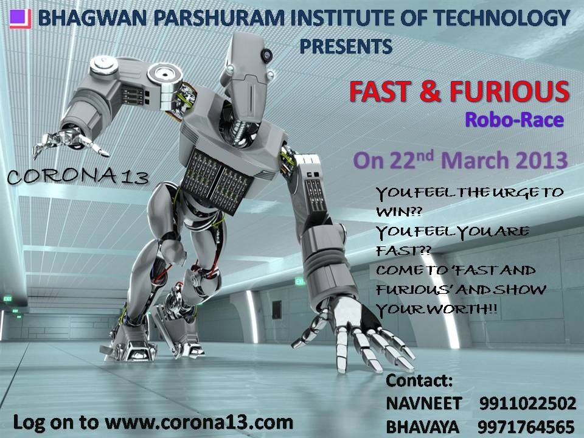
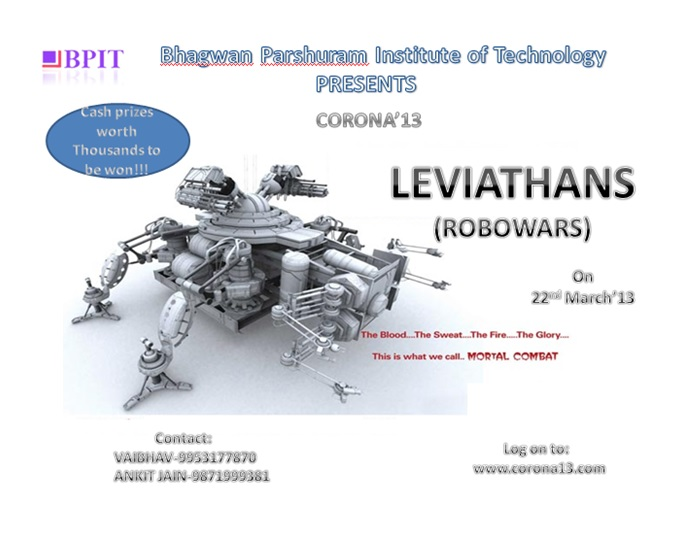
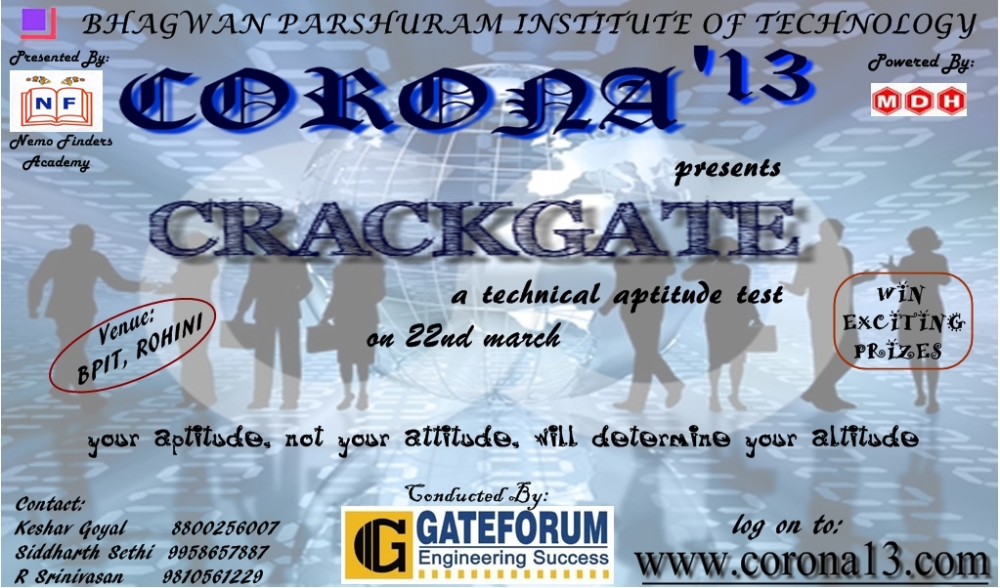

CIRCUITRIX
A Circuit Designing Event
DESCRIPTION:
Are you among those engineers who despise large circuits, ugly integrals and complex machines? Then Circuitrix
is just the event for you! Here is a contest that has more fun than formulas, more concepts than calculations,
and more wit than wires. Intellectually stimulating and yet uncomplicated, it requires only a basic conceptual
understanding of electronics. Electrical engineering is not going to be the same again!

RULES:
1. Competitors have to design the circuit on breadboard.
2. Each team can have a maximum of 2 members, they can also participate individually.
3. The problem would be disclosed on the spot, circuit guidelines will be provided by the coordinators.
4. The circuit is to be designed using only the components provided by the organisers; use of any other components may lead to disqualification.
5. Judges decision will be final and binding to all.
Event Head:
Aayush Srivastava- 9910291356
EDGE AVOIDER
DESCRIPTION:
The edge avoider is programmed to avoid the edge on the surface. Participant will be given a zic zac track.
They have reach the end by avoiding every edge sucussesfully.
RULES:
1. Each team can have 3-4 members.
2. +10 marks for crossing each edge
3. -5 marks for touching the robot.
4. Maximum time to cross the track is 15 min.
Event Head:
Deeksha Pathak- 9013544134
FAITHFUL FOLLOWER
Line Follower Robot
DESCRIPTION:
This event tests your programming skills and your ability to innovate. A line follower robot which obeys your command is needed.
And the fastest, most intelligent team takes away the prize!

Bot Specifications:
1. The width of the bot cannot be more than 25cm. Height and length doesn’t matter.
2. 230VAC will be provided. But wires must be handled by the team.
3. Reprogramming is allowed, but the setup must be brought by the contestant.
4. Teams should bring the spare parts for their bots.
Event Specifications:
1. Each team can have at most 4 working members.
2. On the spot registration is possible, but at Event Head’s discretion.
3. White track on black background and black track on white background will present, with an additional bonus track for the ones interested to test themselves.
4. The ground would be of wood/concrete.
5. The rules and regulations regarding the scoring, penalties will be declared before starting the event.
6. Hardcore Cash prizes for the top contestants.
7. General tools like screwdrivers, cutters will be provided.
8. The teams who have innovative robots will be sent to a special event ‘Real engineers’. Real Engineers is a platform for everyone to showcase their psychotic love for engineering!
9. And of course, Certificates to every achiever!
Event Head:
Pushkar jain- 9958882838
REAL ENGINEER
For any details/queries regarrding the event contact:
Event Head:
Akash- 9873680010
FAST & FURIOUS
The Robo Race
DESCRIPTION:
Race against your opponent on a track full of difficulties, hurdles and shortcuts. Finish the race first...
or by getting maximum zone points. Show your driving skill and stand out as "THE FASTEST".

Team:
The team can consist of 2 to 4 students.
Machine Specification:
1. The machine should fit within a box of dimensions (25x25x25) cm at the start of the game.
2. Internal Combustion Engine and DC power methods are allowed.
3. The Machine should not weight more than 3 KG.
4. Both wireless and wired machines are allowed.
5. Use of readymade robot is not allowed, but one can use the readymade circuits
Power Supply:
Participants will be allowed to use maximum on board 12V DC power. At arena 220V AC will be provided for adapter.
Game Field:
1. The width of the track is 30 cm.
2. The entire game field is divided into no. of sub zones. Each zone contains various hurdles which are as follows:
• Inclined plane • Stone • Water • Sand • Bumper • Hanging path
• There can be another 2 to 3 surprise hurdles on the field.
3. Participants have to start the game from starting zone and reach to finish line in minimum possible time.
Point System:
1. The game field is divided in no. of zones and each zone has some points.
2. Touching the boundary of track and use of hand will result deduction in points.
3. If the participant is not able to complete the game field than points will be given on the basis of no. of sub zones completed.
4. If the participant is able to complete the game field than the points will be given as follows:
Points of each zone and time left.
5. Decision taken by the judges would be final and would not be challenged.
Event Head:
Naveen Singh Adhikari- 9911022502, adhikari.nav@gmail.com
LEVIATHANS
Robo Wars
DESCRIPTION:
Flying blades, violent motors, the thrashing sound of metal and a junk pile of annihilated machines.
Time for some destruction!! Indulge in the recreation of Real Steel…….
satisfy your hunger for retaliation. Vent out that rage and go home with some peace of mind, and cash!!

Event Head:
Ankit Jain- 9871999381
Vaibhav Bhatia - 9953177870
ROBO SOCCER
DESCRIPTION:
NO HUMANS…JUST ROBOTS….!!!!
Call it football or soccer, either way it’s the world’s most popular sport, and like all the good things in the world robots are out to conquer it…….. !!!
Its football time and no-one plays soccer better than engineers, in their own sophisticated way. Its time to show off the machismo, skill and the spirit of soccer with knack of fusing technology with sports seems to be an inherent quality among us.
The power of nuts, bolts and the control will be tested here. All you need is an Innovative, Sturdy and Stable design with a Speedy and Accurate mechanism to goal against the opponent on the field.
So bring out the zeast in you to win… to feel the spirit of winning….to participate in the ROBO LA LIGA… and to celebrate this very spirit, we hail this event known as ROBO SOCCER.
It maybe you on the field, but this time it will be your robo that kicks it off. Make your soccer bot kick, turn, run, dodge and set the field on fire with its soccer-some acts. Don’t just make one, let it be the winner!!!

ROBO KICK
• Teams will compete in a series of matches against each other.
• The objective for each robot is to move the balls as early as possible into the scoring area against other robot .
• Scores will be calculated using the scoring rules.
• The robot which loses a match will be eliminated. Final decision will be of judges.
• The robot which wins the final match will be the overall winner of the competition.
MACHINE SPECIFICATIONS
1) The maximum length with height and weight of robot will be (25x25x25cm).
2) Power supply of 220V(with extension) will be available in the arena; however, the participants can also get their own DC power supply(Max limit 12V).
3) A robot with base of toy car and its gear box as a machine part will be entitled for disqualification. Also, readymade kits are not allowed.
4) The robot must not damage the arena in any way howsoever. This would call in disqualification.
5) The robot can be wired or wireless controlled by a remote control, which is not included in the size constraint.
6) The entire robot must be behind the starting line, prior to the whistle call, indicating start of race. Failure of the following of rule will result in disqualification.
7) In case of wired robots, the wire should be left slack when performing at the arena.
8) Any ambiguity/concern arising out of the robot design will be addressed then and there, and the decision of the judges will be final and binding in all regards.
9) All robots must be able to fully deactivate which includes power to drive in under 60 seconds by a manual disconnect.
10) All robots must have easily available and controlled mobility in order to complete under no circumstance.
11)The robot may become out of control by the operator, in any such case the robot will be disqualified.
12) Each team must bring their own tool kits.
GENERAL RULES:
1) Team can consist of maximum 3and minimum 2 members. Each team must have a leader who would be representing his team and is in-charge of controlling the robot. Each student must have a valid ID-card of their college.
2) There is no limit on the number of teams from a college.
3) There are negative points as penalty, in case the robot touches boundaries.
4) The robot will have to follow the provided track.
5) The organizers have the right to change or modify the arena and rules and regulations as and when required without prior notice.
RESTARTS:
1) Following are the cases when the robot will be given a chance to restart the match:
a) Interference by a spectator.
b) Interference by an official.
2) Robot will not be allowed to restart a match if they electrical or mechanical software failure after the start of the time clock.
Event Head:
GOURAV GUPTA- 9868213282
CRACK GATE
DESCRIPTION:
An aptitude is a component of a competency to do a certain kind of work at a certain level which can also be considered as talent. The innate nature of is in contrast to achievement, which represents knowledge or ability that is gained. Fortunately, corona '13 has come up with a technical aptitude test by” GATE FORUM” to test your mettle in scientific aptitude and your zeal for scientific thinking...If u think u have this x factor in u...
give a shot and prove that u have edge over other students when it comes to scientific temperament....

RULES:
1. Paper will be conducted branch wise.
2. Time duration of the paper will 1 hour.
3. Paper will consists of 25 questions.
4. Paper will be objective type.
5. There will be no negative marking.
6. Toppers from each branch will be awarded.
7. Use of any unfair means will result in disqualification.
8. Use of mobile phones, calculators & any other electronic devices is not allowed.
9. No registration fee.
Event Head:
Keshav Goyal- 8800256007